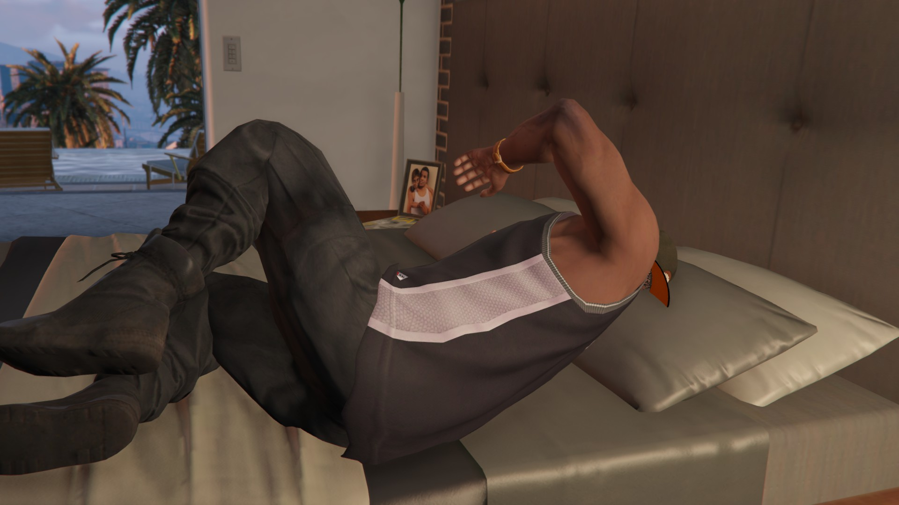
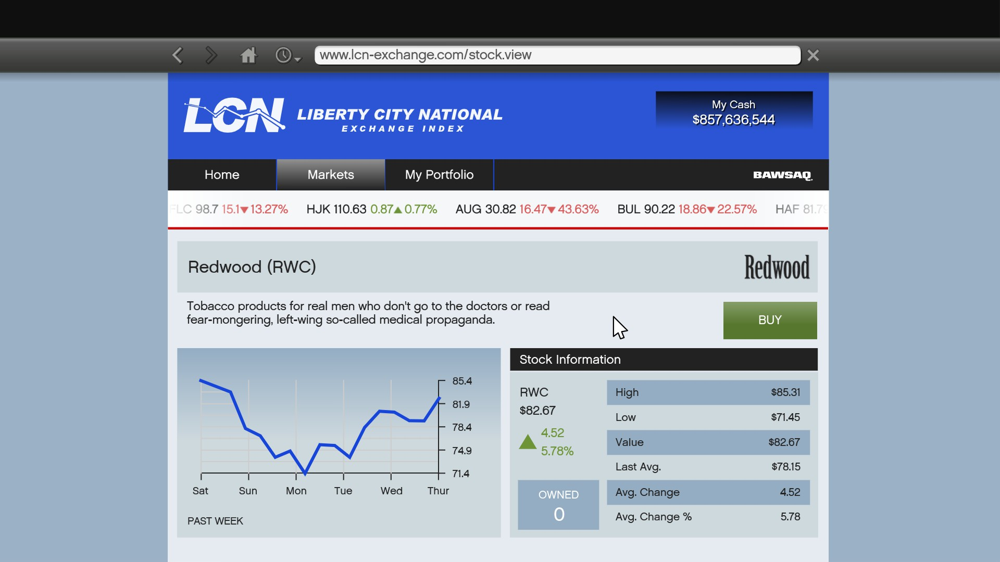

This assassination is the very first mission you will need to do. Sadly, you cannot wait until all of your Story missions are done as you will get a text from Franklin at one point before a heist saying something like 'I need to do something from Lester first before we can make a move on this thing'. This is when you will have to do it.
Before you do this mission, make sure you invest ALL of your money. You will want to make ALL THREE Story Mode characters (Micheal De Santa, Franklin Clinton and Trevor Phillips) invest ALL of their hard earned cash. Just before you go ahead with this, make sure you save before you invest and immediately after you complete the mission. Once you have invested, go and do the mission right away.

Once this has been completed and you have used the Quick Save feature on your phone, head straight home. The best way to pass time while your Stock Market investment increases is Sleeping. It's boring but quick and free. Make sure you make alternative saves incase you over shoot your investment and miss the highest prices. How I do it is save once you get home, go to sleep, check your phone. If it has risen over those six hours your character has been sleeping, quick save, sleep and repeat. Once you notice your percentage or price starts decreasing, reload the save where it was highest and sell all of your shares for all three characters.
This mission is the MOST IMPORTANT assassination mission. This requires you to be quick in the mission, and to be patient when waiting for prices in the Stock Market to rise. Here are the statistics for this mission:
Once this has been completed and you have used the Quick Save feature on your phone, head straight home. The best way to pass time while your Stock Market investment increases is Sleeping. It's boring but quick and free. Make sure you make alternative saves incase you over shoot your investment and miss the highest prices. How I do it is save once you get home, go to sleep, check your phone. If it has risen over those six hours your character has been sleeping, quick save, sleep and repeat. Once you notice your percentage or price starts decreasing, reload the save where it was highest and sell all of your shares for all three characters.
BUT WAIT! Before you do anything, just after you've finished selling your shares and got this cash, you are still not done. Ready for some more cash? Of course you are. Quickly head over to Redwood (RWC) in the LCN Stock Market and do the same process on this. The reason you will earn a lot from this is because the market has just crashed, so the shares go back up quickly.
This is the first mission that requires BAWSAQ. Prices vary by a huge difference so be careful on these ones. The rest is as normal.
Once this has been completed and you have used the Quick Save feature on your phone, head straight home. The best way to pass time while your Stock Market investment increases is Sleeping. It's boring but quick and free. Make sure you make alternative saves incase you over shoot your investment and miss the highest prices. How I do it is save once you get home, go to sleep, check your phone. If it has risen over those six hours your character has been sleeping, quick save, sleep and repeat. Once you notice your percentage or price starts decreasing, reload the save where it was highest and sell all of your shares for all three characters.
This mission is another BAWSAQ investment. Remember, the prices and percentage will vary in huge differences. Here are the statisctics:
Once this has been completed and you have used the Quick Save feature on your phone, head straight home. The best way to pass time while your Stock Market investment increases is Sleeping. It's boring but quick and free. Make sure you make alternative saves in case you over shoot your investment and miss the highest prices. How I do it is save once you get home, go to sleep, check your phone. If it has risen over those six hours your character has been sleeping, quick save, sleep and repeat. Once you notice your percentage or price starts decreasing, reload the save where it was highest and sell all of your shares for all three characters.
This is the last mission. Once you have completed this, feel free to comment what you ended up with. Thankfully, you don't have to use BAWSAQ this time. Just LCN again.
Once this has been completed and you have used the Quick Save feature on your phone, head straight home. The best way to pass time while your Stock Market investment increases is Sleeping. It's boring but quick and free. Make sure you make alternative saves incase you over shoot your investment and miss the highest prices. How I do it is save once you get home, go to sleep, check your phone. If it has risen over those six hours your character has been sleeping, quick save, sleep and repeat. Once you notice your percentage or price starts decreasing, reload the save where it was highest and sell all of your shares for all three characters.
Congratulations! You have now completed all of the assassination missions.